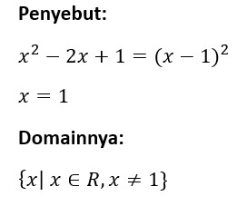

🔹 Contoh Soal 1
Diketahui fungsi rasional berikut:
Tentukan asimtot dan domain dari fungsi rasional.

Langkah-langkah Penyelesaian:
1. Tentukan domain dari fungsi rasional.
Domain fungsi rasional adalah semua nilai 𝑥 kecuali yang membuat penyebut nol, karena itu menyebabkan fungsi tak terdefinisi.
2. Tentukan asimtot vertikal dan mendatar.